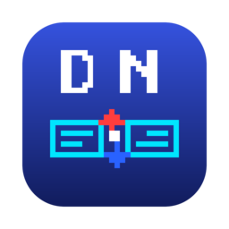

Тот самый Dos Navigator — заново, для современного терминала.
Free Pascal + ncurses · macOS (Apple Silicon)
Перетащил в Applications — работает. Без Homebrew и зависимостей.
Left Files Disk Commands Tools Options Right 13:59:13 ╔═══════════ /Users/count ═══════════╗╔═══════════ /Users/count/ ═══════════╗ ║ Name │ Size │ Date ║║ Name │ Size │ Date ║ ║.. │>UP--DIR<│ ║║.. │>UP--DIR<│ ║ ║Projects │>SUB-DIR<│ 07-06-26║║Documents │>SUB-DIR<│ 07-06-26║ ║deploy.sh │ 842│ 06-15-26║║backup.tar.gz │ 187,725│ 09-04-26║ ║report.pdf │ 254,322│ 09-07-26║║notes.md │ 2,860│ 10-29-26║ ║sources.zip │1,154,423│ 07-04-26║║demo.png │ 356,042│ 09-25-26║ ╟─────────────────┴─────────┴─────────╢╟────────────────┴─────────┴─────────╢ ║ Projects ║║ backup.tar.gz 187,725 09-04 17:30║ ╚═════════════════════════════════════╝╚════════════════════════════════════╝ /Users/count> 1Help 2UserMn 3View 4Edit 5Copy 6RenMov 7MkDir 8Delete 9PullDn10Exit
Воссоздание классического Dos Navigator от RIT Labs — двухпанельного файлового менеджера из 90-х — написанное с нуля на Free Pascal и ncurses. Оригинальные исходники на Turbo Pascal служили референсом поведения и внешнего вида; код новый, под Unix-терминалы.
Синие панели, жёлтая подсветка, оконный рабочий стол поверх панелей и тетрис по Ctrl+T — всё на месте. Но внутри — UTF-8, мышь с драгом, SFTP и автомонтирование образов дисков.
zip, tar, 7z, iso открываются по Enter и ведут себя как папки. dmg/iso на macOS автоматически монтируются и размонтируются.
Панель на удалённой машине через SFTP, менеджер SSH-сессий (Ctrl+S), копирование между локальной, удалённой и архивной панелями в любую сторону.
Просмотр и редактирование в перекрывающихся окнах поверх панелей — несколько файлов сразу, drag за заголовок, ресайз мышью.
Свои команды в dn.mnu с плейсхолдерами (%f, %s, %d) — глобальное меню и локальное на каталог, как в оригинале.
Столбцы панелей, точные размеры файлов, подсветка по типам, цветовые схемы, подтверждения — сохраняется между сессиями.
Куда же без этого. Прямо в файловом менеджере, как в оригинале.
Весь продукт — код, 160+ автотестов в настоящем pty, иконка (пересобранная попиксельно из оригинального DN.ICO 1995 года), сборка, подпись и нотаризация — создан в диалоге с моделью Claude Fable. Человеческий вклад — постановка задач и ревью.
Софт сегодня — мем. Но этот мем проходит Gatekeeper.
macOS (Apple Silicon): скачай DMG, перетащи приложение в Applications. Образ подписан и нотаризован — никаких предупреждений.
Из исходников:
brew install fpc ncurses
make && bin/dn